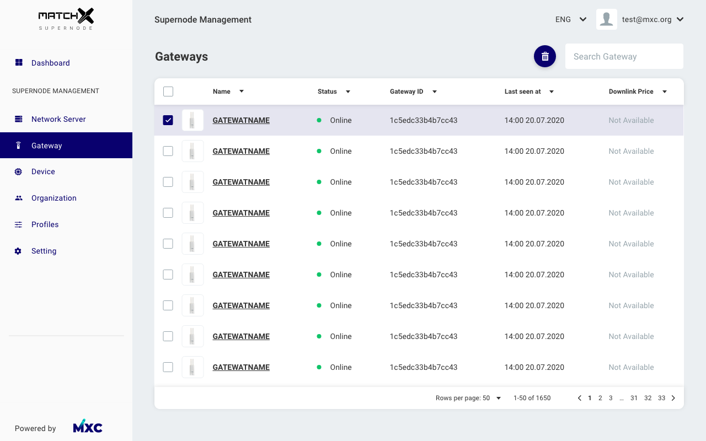
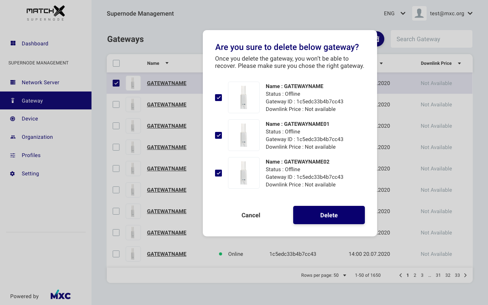
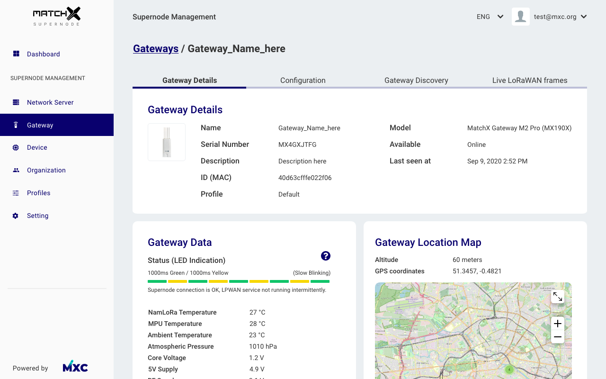
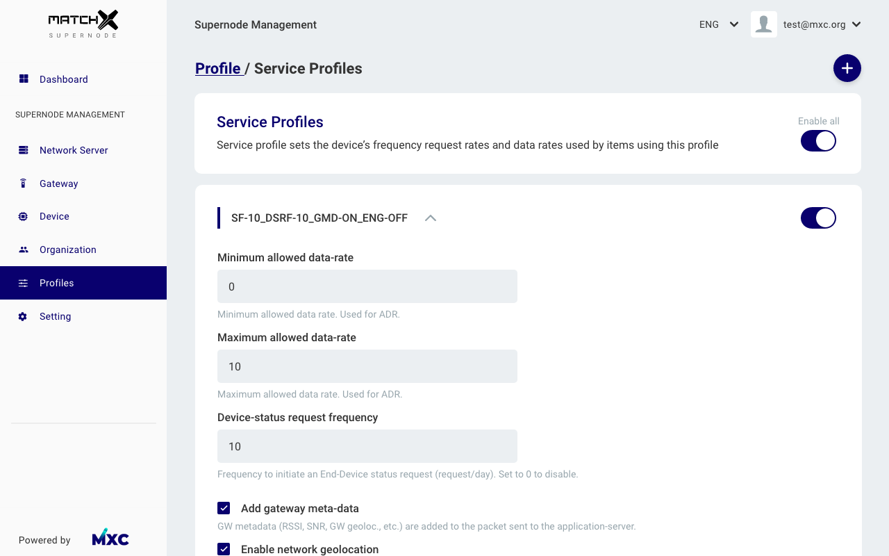
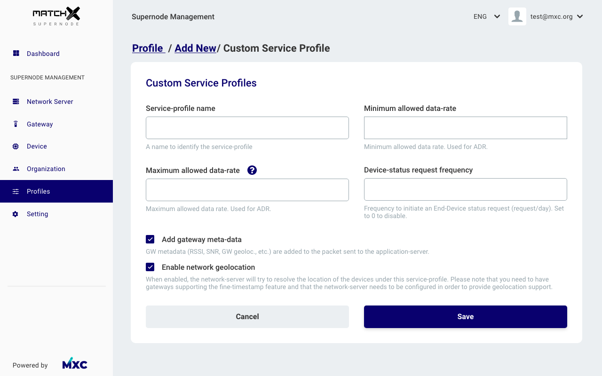
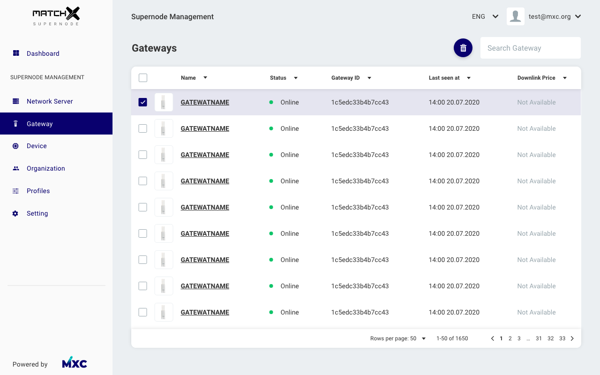
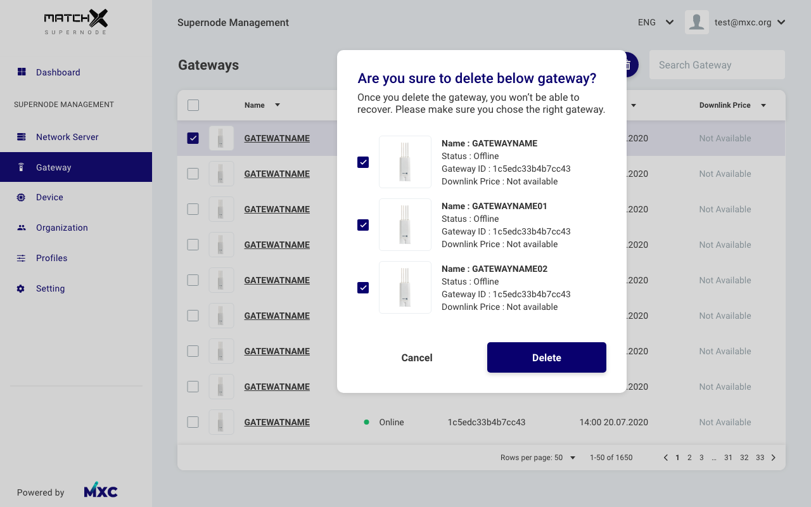
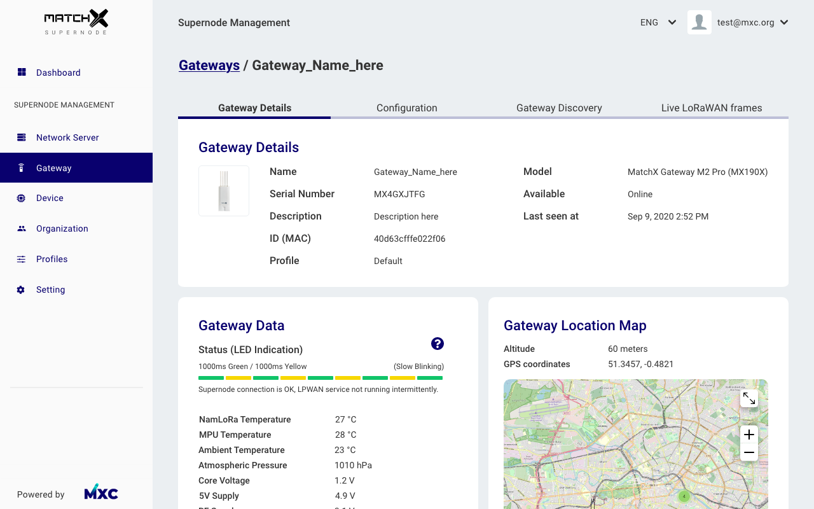
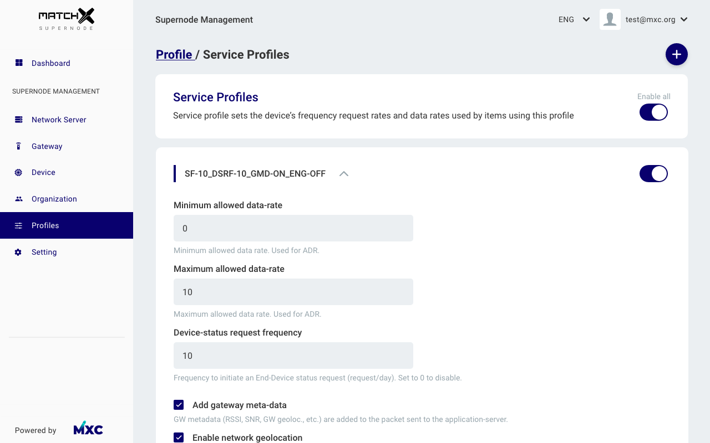
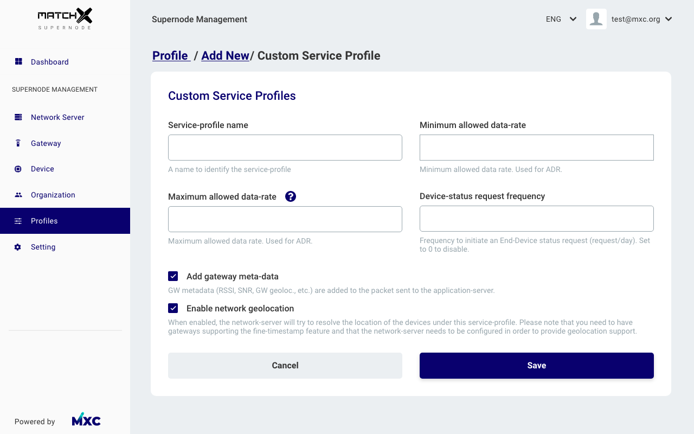

Ordinary people do not understand what LPWAN Gateway is and how this hardware earns cryptocurrency through Datadash
Low-power Wide-area Network (LPWAN) is a type of wireless technology for the transmission of small amounts of data over long distances. It is used in distributed telemetry networks, inter-machine interaction, and the Internet of Things. LPWAN can collect data from different equipment such as meters, sensors, or gauges. By installing this hardware users are automatically mining MXC tokens, as well as data gathering, and you can buy and sell this data through cryptocurrency.
But do people who just want to earn tokens care about data gathering? After some user surveys we realised that they do not.
There are only few percentages of people or companies who have good knowledge of LPWAN hardware. They find that this gathered data can lead them to increased profits So we have two types of users.
Users who want to earn tokens only can simply scan the QR code with the app and set the LPWAN hardware to the default setting. Users who want to exchange data from mining can configure their own settings through the controller which is a web interface.

 
